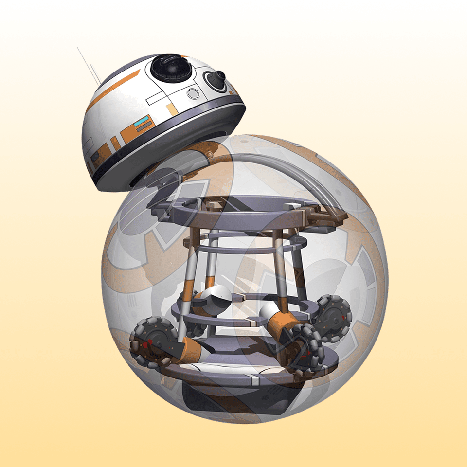
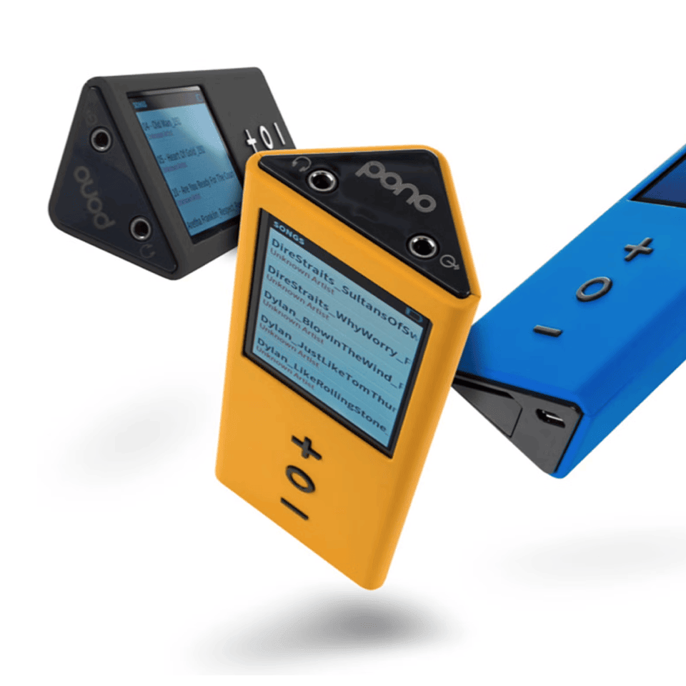
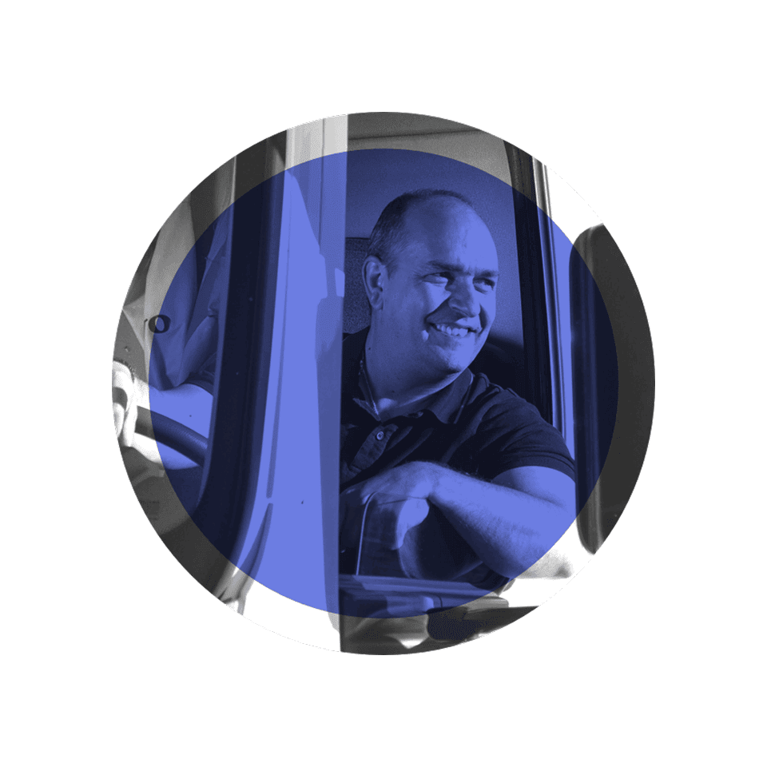
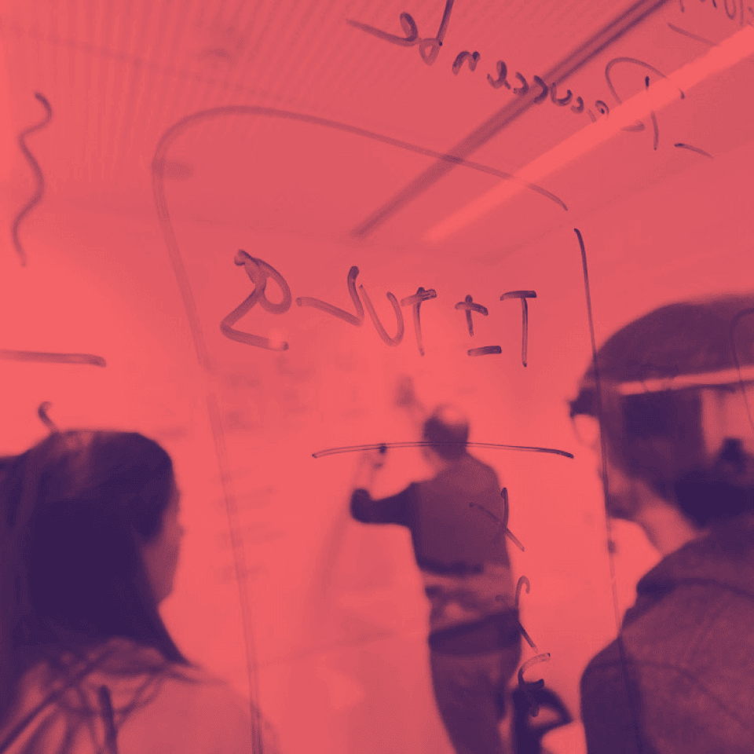
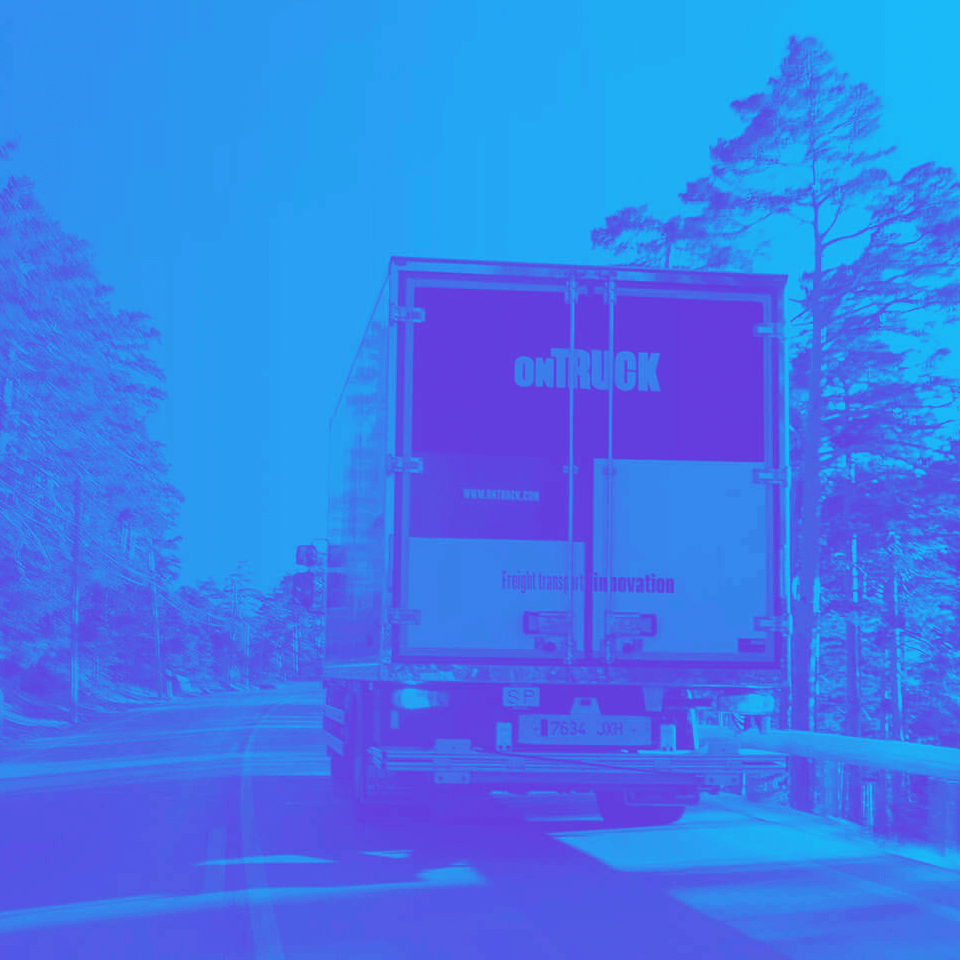

I am a hands-on Product Leader with a strong background in design and engineering. I currently lead the Product Team at Real Madrid, where we deliver digital experiences to over 600 million fans worldwide.
-
Side Project
Saferlayer
VisitSaferlayer is a free tool that protects your documents with smart, tamper-proof watermarks to prevent identity theft. Our watermarks are exceptionally difficult to remove, even with AI. A key feature of Saferlayer is that it operates entirely within your browser, ensuring your documents are never uploaded to a server.
-

Side Project
How BB-8 Works
Visit"There were a lot of discussions about how having a CG BB-8 would be so much easier, but we also knew it would be better for the film if it were performed" said director J.J. Abrams when the first trailer for Star Wars Episode VII debuted.
But how was BB-8 actually built? Strangely, the internet didn't have a clear answer, so a friend and I set out to uncover it ourselves.
The result of our investigation was this site which quickly went viral, earning features in Popular Science, Time Magazine, the BBC, and many other media outlets. It was even named Side Project of the Summer by Net Magazine.
-

Post
The Rise and Fall of Pono: 7 Product Lessons from Neil Young's Audio Dream
Read postPono, the high-fidelity audio player created by music legend Neil Young, promised to revolutionize how we listen to music. Instead, it flopped. Looking back, the reasons for its failure were there from the start.
-
Case Study
Doctor 24: From MVP to Scheduled Calls
Here's how we solved this challengeDoctor24 started as a simple service that let users consult with doctors online: just log in and start a video call with one of our physicians. But as we spoke with users, we realized how much they valued the ability to connect with a doctor they already trusted. At the same time, they loved the immediacy of pushing a button and getting instant care.
Our biggest challenge when designing Scheduled Appointments was striking the perfect balance between familiarity and convenience, giving users the best of both worlds.
-

Case Study
Ontruck: Solving the Tricky Times Problem
Here's how we tackled the problemOntruck is a platform that enables companies to easily book and track road freight shipments online.
One day, our drivers began reporting that meeting all the scheduled stops on time was often difficult, or even impossible. When we analyzed the data, we discovered that in a significant number of cases, users were requesting pickup and drop-off times that were problematic for our drivers.
-

Post
The reasons why we changed the way we hired designers at Ontruck
Here's what we learned and how we changed itFor a long time, one of the steps in our design hiring process at Ontruck was a take-home exercise. However, as more candidates went through the process, we became increasingly aware of the drawbacks of this approach.
-

Post
The 10 rules that helped us improve internal communication at Ontruck
Here's the approach we took to solve itAt Ontruck, we grew from a small team of 10 sharing a single office to a 160-person team spread across four countries in just three years. Like many fast-growing startups, we faced challenges in maintaining effective internal communication.
-
Post
Why did we stop going to the Moon more than 50 years ago, and why have we decided to return now?
Read postThe short answer: we stopped going because a marketing campaign ended. We're returning now because the business opportunity is huge. But let's deep dive into the long answer, because it's full of fascinating nuances about the political context of both eras.